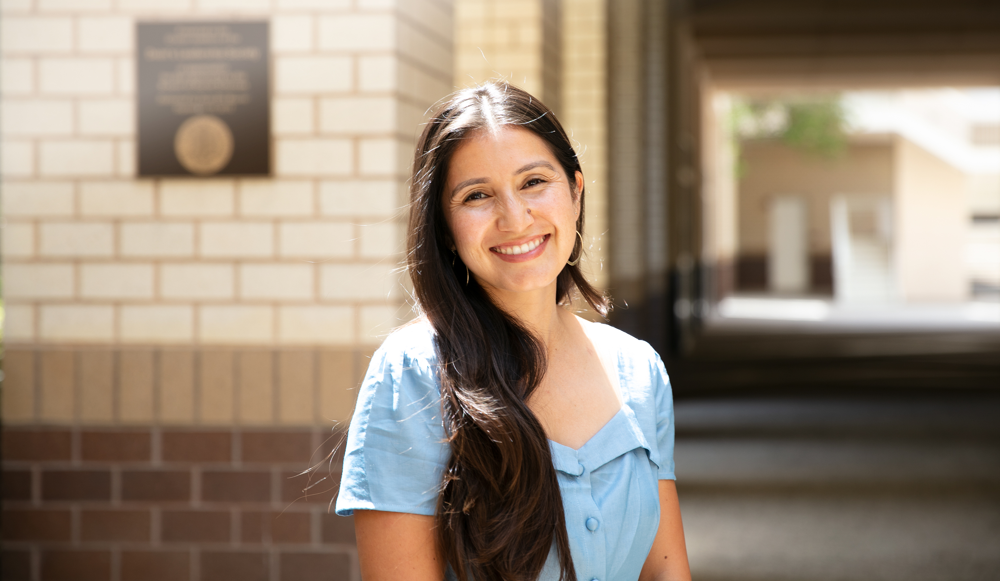

Ashley Hernandez, Ph.D.
Ashley Hernandez is an Assistant Professor in the Department of City and Regional Planning at the University of North Carolina at Chapel Hill. Her research examines housing mobility, community development, and anti-displacement strategies in historically marginalized neighborhoods. Drawing on ethnography, archival research, and spatial analysis, her work explores how racialized real estate systems shape neighborhood inequality and how community-based organizations, tenant movements, and grassroots coalitions build power to steward land and secure long-term stability. Her scholarship connects planning practice to broader questions of race, migration, urban governance, and territorial belonging. Through her teaching and research collaborations, she works closely with students and community partners to advance more equitable, community-led approaches to housing and neighborhood development.